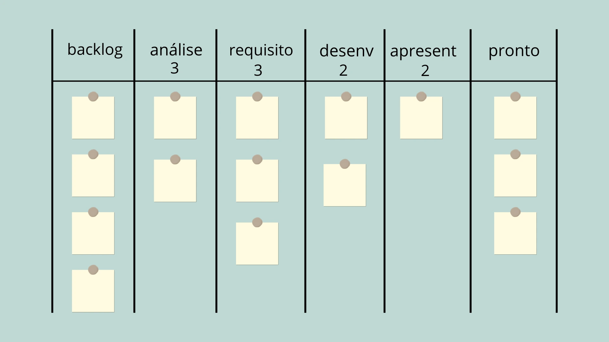

O Método Kanban
O Kanban é um método de gestão e melhoria contínua do trabalho do conhecimento (ou criativo) que atua de modo evolucionário e experimental - sem implementação de modelos pré-fabricados ou mudanças exagedadas, que causam mas estresse do que resultados -, levando em conta a perspectiva do cliente sobre a entrega de produtos e serviços.
Os Jardins do Leste do Palácio Imperial
David Anderson, criador do método, conta em seu livro “Kanban, mudança evolucionária de sucesso para seu negócio de tecnologia” sobre os Jardins do Leste, no Palácio Imperial em Tokio. Lá, a entrada não é cobrada, mas cada visitante recebe um cartão, que é devolvido na saída do local.
Num primeiro momento, pode não parecer ter sentido tal cartão, visto que a entrada é gratuita. No entanto, existe uma quantidade finita deles, exatamente a mesma da capacidade de pessoas dentro do local. Ou seja, quando não há mais cartões disponíveis, significa que os Jardins atingiram sua capacidade máxima, e novos entrantes devem esperar.
Esta medida é tomada para que o local não fiquei muito cheio - afinal, as pessoas visitam para ver os Jardins, não aglomerações -, bem como para ser possível manter a limpeza e segurança.
A palavra “kanban”, em japonês, significa cartão ou sinal, tal como cartões de entrada dos Jardins do Leste.
Sistema puxado vs empurrado
Da mesma forma, o método Kanban funciona para empresas. Quando uma demanda entra no fluxo de trabalho, ela recebe um cartão. A quantidade desses cartões reflete o número de demandas já comprometidas.
Portanto, fica fácil de visualizar quantas demandas estão sendo trabalhadas e se ainda há capacidade para aceitar outras naquele momento. Vendo de outra forma, a equipe “puxa” as demandas conforme sua capacidade, ao invés de elas ser empurradas para o fluxo sem nenhum critério, causando congestionamentos e futuros atrasos.
Vantagens operacionais
Visualização do trabalho
Um dos propósitos do método é gerar uma imagem clara de como o trabalho flui na empresa e em seus serviços. Sabendo quais são as etapas do processo e sua capacidade, e as regras para progredir as demandas, é possível gerenciar e reduzir gargalos, mitigando riscos e melhorando as entregas de forma contínua.
Identificação de riscos
Com essa visualização, também fica fácil identificar riscos: se temos um congestionamento ou problema no fluxo, sabemos que as demandas das etapas anteriores podem ser impactadas, o que ajuda a antecipar a busca por soluções.
Agilidade na resposta
Assim, a empresa ganha em adaptabilidade, sendo capaz de corrigir seus processos e evoluir de forma ágil, melhorando aquilo que realmente é uma necessidade, sem precisar implementar um modelo pré-estabelecido.
Como o Kanban funciona
O método trabalha de acordo com seis práticas gerais:Visualize
É impossível gerenciar aquilo que não se enxerga e, muitas vezes, principalmente quando falar em trabalho do conhecimento, o que é necessário fazer torna-se invisível. O Kanban sugere que se faça uma representação visual dos fluxos de trabalho, demandas, capacidade, regras e métricas. Isso torna claro para todos o que é preciso ser feito.
Limite o trabalho em progresso
Quando temos muitas coisas para fazer é comum ficarmos sobrecarregados e até paralisados. Limitar o trabalho em progesso (ou WiP - work in progress) é uma forma de priorizarmos que já está sendo feito e evitar mudança de foco entre diversas demandas, o que causa desperdício de tempo. Pense, por exemplo, que você está montando uma planilha que, normalmente, seria entregue em uma hora. Se você for interrompido para fazer outras coisas, toda vez que voltar à planilha terá que relembrar em que parte você estava e sua linha de raciocínio, além de retomar seu fluxo de eficiência. Com certeza (e sem contar as paradas), você levará mais tempo do que a uma hora inicialmente prevista.
Gerencie o Fluxo
Apenas de visualizar as demandas no fluxo e respeitar um limite de capacidade, já estamos gerenciando o trabalho, pois conseguimos ver quais etapas estão mais congestionadas e não mudar o foco em demasia. Porém, também é importante colhermos dados que serão valiosos para a melhoria do trabalho, tais como o prazo acordado e a quantidade de tempo restante até ele, a quantidade de demandas em cada etapa, o tempo para que cada entrega ocorresse, a quantidade de demanda entregue por determinado período de tempo, a quantidade de tempo que cada demanda está no fluxo, entre diversas outras.
Torne as políticas explícitas
Quantas vezes sua equipe precisa perguntar algo para tomar uma decisão? COmo se espera que os colaboradores tomem atitudes quando as regras não são claras? Políticas explícitas tornam as coisas mais transparentes, confere autonomia sobre decisões e gera organização.
Implemente cadências de feedback
Aqui não estamos falando sobre aquela conversa "1:1" entre gestor e funcionário. Tais reuniões são feitas com toda a equipe, onde o foco é visitar o trabalho feito, entender o que pode ser melhorado e fazer acordos para que tais sejam realizados, sempre em colaboração entre gestão e time. Nesse momento, é importante olhar para o quadro, analisar as métricas, ouvir os problemas e as opiniões para que se busque evoluir em algo que vá gerar valor, e não apenas uma mudança.
Melhore Colaborativamente, Evolua Experimentalmente
Por mais que gestores, ao menos em tese, tenham mais experiência que os demais colaboradores, duas cabeças pensam melhor que uma. Além disso, os times acabam sabendo mais da operação por estarem diariamente em contato com ela, dependendo dos fluxos e regras e, por isso, sabendo melhor o que está funcionando ou não sob a ótica da realização do trabalho.
Busque melhorias pequenas e significativas, que não causem problemas caso falhem. Se algo não está bom, colha informações e experimente mudar algo. Se não der certo, volte atrás, tente outra forma, ao invés de querer resolver o mundo de uma vez só. Evoluções pequenas geram menos estresse e mais aprendizado.
Kanban para equipes e organizações
O Kanban é frequentemente associado a times, particularmente no gerenciamento de fluxo de trabalho e alívio de sobrecarga. As equipes podem usar o Kanban para retomar o controle sobre suas tarefas, garantindo que não fiquem sobrecarregadas e que estejam trabalhando nas prioridades certas na hora certa. Dessa forma, ganham em produtividade e reduzem o estresse.
No entanto, o Kanban ganha força quando aplicado em maior escala. Utilizar o método em uma linha de serviço e para gestão de projetos e portfólio pode aumentar significativamente a eficiência de uma organização. O Kanban se torna uma ferramenta de desenvolvimento organizacional, permitindo que departamentos e equipes trabalhem juntos de forma mais eficaz, mantendo uma abordagem centrada no cliente.
Objetivos do Kanban
O Kanban também é um método não prescritivo pois não tem intenção de levar as organizações a um modelo ou formato pré-definido, e nem de receitar soluções pré-fabricadas. Ao contrário disso, o Kanban visa:
Alinhamento entre times e departamentos: com uma abordagem focada em serviço, várias equipes ou setores podem trabalhar em harmonia, compartilhando os mesmos objetivos e reduzindo silos.
Entrega de serviço aprimorada: conforme o trabalho se torna mais ágil entre várias equipes, as empresas podem entregar resultados melhores e mais rápidos aos seus clientes.
Melhoria contínua: o Kanban incentiva a avaliação e o refinamento contínuos dos fluxos de trabalho, levando a melhorias de longo prazo na eficiência, qualidade e satisfação do cliente.
Conclusão
O Kanban é mais do que apenas uma ferramenta para gerenciar tarefas — é uma abordagem estratégica para melhorar as operações, o atendimento ao cliente e a adaptabilidade da sua empresa. Ao visualizar fluxos de trabalho, gerenciar riscos e promover a melhoria contínua, o Kanban equipa sua empresa para prosperar em um mercado em constante evolução.